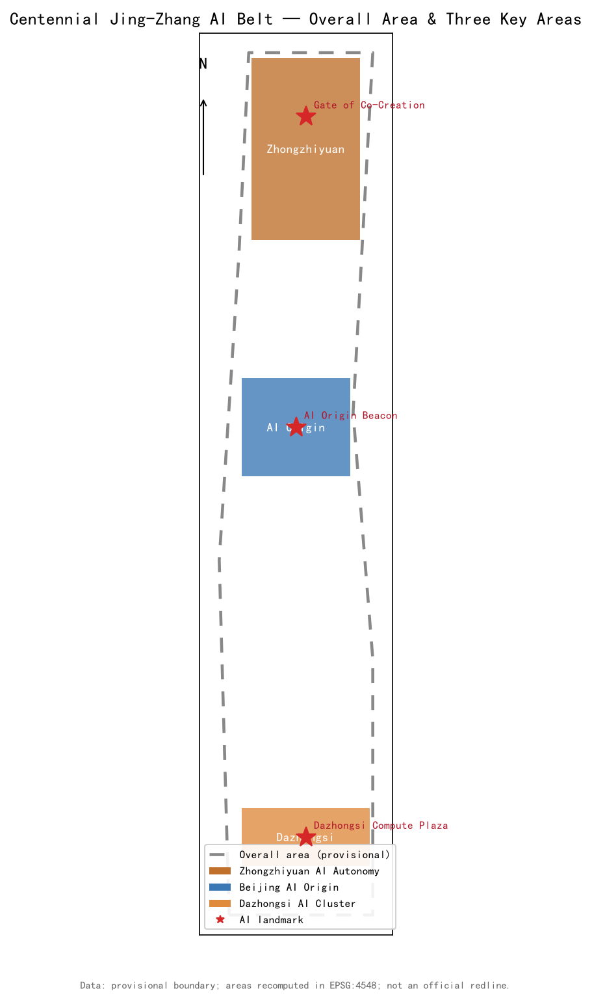
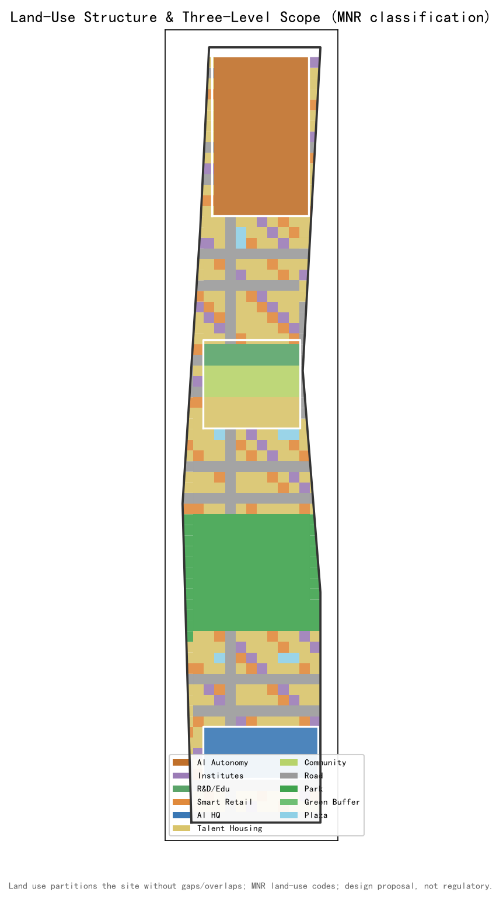
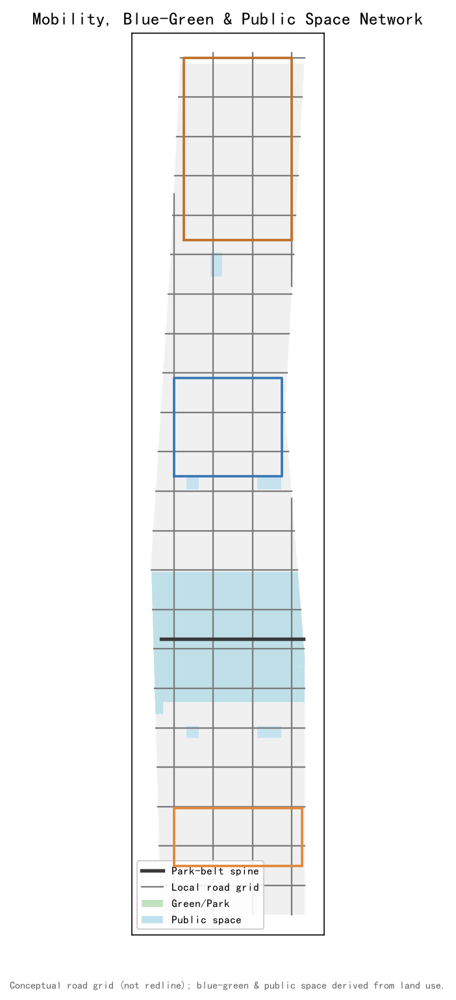
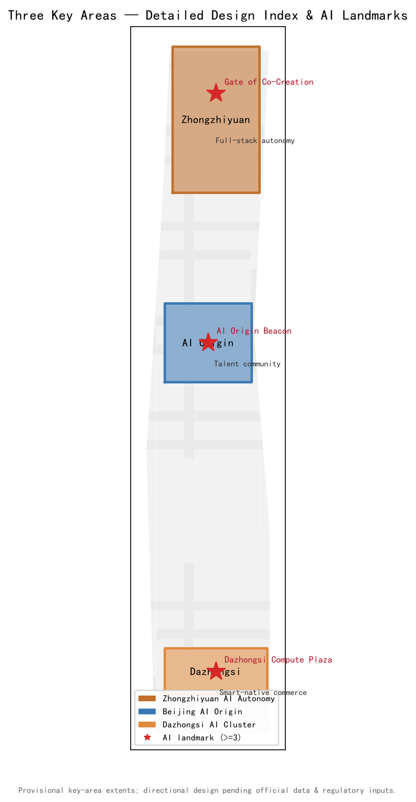
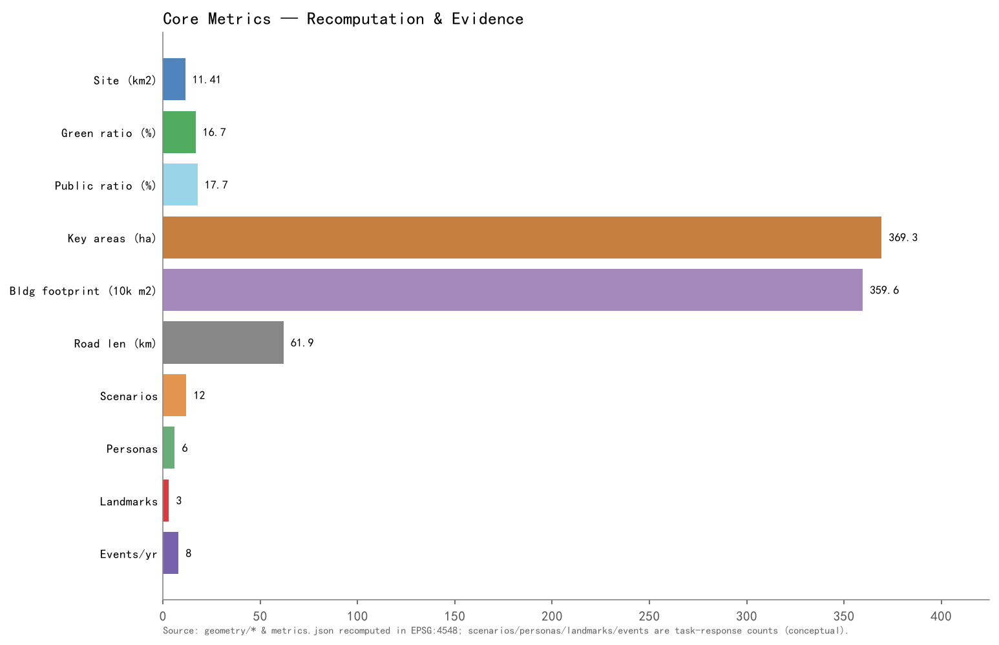

Centennial Jing-Zhang AI Innovation Belt Urban Design Proposal (English)
海淀·百年京张 AI 创新带城市设计 · 形式化专业设计包（provisional，待官方红线替换）· 提交者 xhily · 许可 COMMUNITY-DISPLAY-ONLY
Design Basis and Source List
Sources include the official open call announcement, the agent taskbook, MOHURD urban-design and regulatory-plan measures, MNR land-use classification, the Beijing 2035 plan, and open datasets. All boundaries are provisional pending official redlines.
Three-Level Scope Framework
Coordinated research area, overall design area, and key detailed-design areas form a three-tier scope: research (regional futures), overall (renewal + regulatory-plan depth), and three key areas (Zhongzhiyuan, Beijing AI Origin, Dazhongsi).
Coordinated Research Area
Industry and future-city research framed around AI autonomy, talent density, and computing supply for the corridor.
Overall Design Area
Urban-renewal and regulatory-plan-depth urban design: land use, intensity, transport, municipal services, blue-green and public space.
Key Areas Detailed Design
Three key areas total 369.3 ha: Zhongzhiyuan AI autonomy acceleration (192.1 ha), Beijing AI Origin community (104.3 ha), Dazhongsi AI industry cluster (72.0 ha).
AI Innovation Ecosystem, Personas, AI+ Scenarios
Six user personas and twelve AI+ scenario cards (S01-S12) including industry-tests S01/S03/S10; three AI pilgrimage landmarks: Gate of Collective Wisdom, AI Origin Bell Tower, Dazhongsi Compute Square.
Land Use, Building Scale, Retain-Renovate-Demolish
Mixed-use AI campus fabric with explicit retain/renovate/demolish strategy as a directional proposal, not an engineering conclusion.
Transport, Rail, Municipal, Public Services
Grid slow-traffic network, rail-linked nodes, and municipal new infrastructure sized from planning norms.
Blue-Green Network, Public Space, Urban Character
Green ratio 16.7%, public-space ratio 17.7%, structured around the Jing-Zhang park belt.
Renewal Projects, Implementation Policy, Phasing
Three phases (2026-2028, 2028-2030, 2030-2035) with an operations and co-creation charter.
Metrics, Area Recalculation, Compliance Matrix
All core metrics recomputed from submitted geometry in EPSG:4548; compliance, standard, and design-depth matrices provide the evidence chain.
Risk, Copyright, Compliance
Data gaps (no official redlines), provisional boundaries, and open-data precision limits are declared; license COMMUNITY-DISPLAY-ONLY.
References
Public announcements, regulations, plans, and open datasets listed in sources.json.




